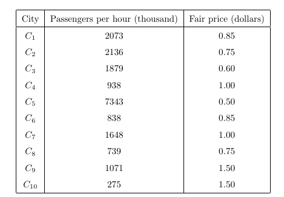

Complete and critique the ten-city regression calculation
Explanation, worked examples and practice
Useful first: Derive and interpret scalar and matrix OLS, Apply BLUE and classical inference with their stated conditions
Outcome and conditions
Translate a fare question to a transparent linear model, calculate OLS/predictions/residuals/variance and zero-slope test from a complete summary, and interpret signs/units/domain plus the limits of policy conclusions.
Study conditions, assessment scope and sources
Required components (all must be elicited and passed):
- C1: Transparent model with hypothesis versus imposed shape distinction.
- C2: Correct complete fit/residual/change calculations with literal units.
- C3: Correct \(\mathrm{df}\), variance, \(\mathrm{se}, t\) and conditional hypothesis decision.
- C4: Domain/specification critique, plausible omitted-factor threat, fitting-identity/causal/optimal-policy boundaries.
Finished-note authority:
- From economic intuition to a model
- Ten-city example: keep the source's measurement scale
- Estimate the line
- Fitted values and residuals
- Disturbance variance, slope variance, and the t statistic
Teaching/support: relevant finished notes, supplied prompts and calculator permitted. Independent and delayed checks: closed notes, no lesson/keys/software-generated explanation/search/AI assistance, no hints; a basic arithmetic calculator is allowed and must be reported. Numerical inputs/cutoffs/p values in the question are allowed data. The teacher hides keys until an answer is committed. Unknown assistance/access/exposure is unscorable for independent acquisition. A previously exposed item cannot be counted as fresh. A learner may explain orally or in writing; mathematical reasoning and units must be explicit.
Prerequisites and checks
Check the prerequisites
O006-P1
item_id: O006-P1, item_version: 2, role: prerequisite diagnostic. Capability: O002; reason: Scalar fit/residual arithmetic must be available.
Prompt: Agent-created hypothetical summary, distinct from every full assessment case: mean \(\bar x=5\), mean \(\bar y=20\), \(S_{xx}=12, S_{xy}=-18\). Give slope/intercept and define a fitted residual.
Key: Slope \(S_{xy}/S_{xx} = -1.5\); \(\text{intercept}=20-(-1.5)\cdot 5=27.5\); residual is actual \(y\) minus fitted \(y\). These probe scalar fit and residual definition only, not the whole O002 outcome.
Rubric: pass requires both coefficients, their stated operations and actual-minus-fitted definition without help; partial for a missing operation/definition or recoverable arithmetic slip; fail for an opposite residual convention or unusable method. Unknown assistance/exposure is unscorable for an independent diagnostic. This distinct focused diagnostic never counts toward acquisition and does not expose O002 or O006 full-item inputs. Ask once before support; never repeat it as fresh evidence. Repair: Return to O002 Explanation2–3 and supported task; full upstream checks remain subject to freshness.
Prepared prerequisite: Explanation steps.
O006-P2
item_id: O006-P2, item_version: 2, role: prerequisite diagnostic. Capability: O005; reason: Conventional variance/test requires conditions, df and square root.
Prompt: Agent-created hypothetical simple-regression summary, distinct from all full assessment cases: \(n=12, k=1\) nonconstant regressor with intercept, \(SSE=80, S_{xx}=20\). Give residual \(\mathrm{df}\), estimated noise variance, estimated slope variance and standard error. Name the full assumptions needed for the stated exact classical null \(t\) reference and its \(\mathrm{df}\).
Key: Residual \(\mathrm{df}=n-k-1=10\); estimated noise variance \(\hat\sigma^2=80/10=8\); estimated slope variance \(\widehat{\operatorname{Var}}(\hat\beta_1)=8/20=0.4\); \(\mathrm{se}=\sqrt{0.4}\), approximately \(0.632456\). Exact null \(t(10)\) requires all six classical assumptions: linearity in parameters, random sampling, no perfect collinearity, zero conditional mean, homoskedasticity and conditional normality. Merely calling residuals orthogonal does not establish the population assumptions. This probes numerical inference prerequisites and the exact-reference condition, not the whole O005 theorem/derivation outcome.
Rubric: pass requires the four calculations with their operations and all six exact-test conditions; partial for a missing calculation/condition or recoverable arithmetic slip; fail for using \(n\) as variance \(\mathrm{df}\) or asserting exact \(t\) without normality. Unknown assistance/exposure is unscorable for an independent diagnostic. Ask once before support; this focused item never substitutes for upstream acquisition or exposes its full numerical cases. Repair: Return to O005 Explanation4–6 and supported task, preserving fresh full upstream checks.
Prepared prerequisite: Explanation steps.
Adequate qualifying current or explicitly approved compatible evidence permits skipping the matching diagnostic. Otherwise ask each once before targeted support. A focused pass demonstrates only the named dependency components; confidence, familiarity or diagnostic success does not grant upstream whole-objective acquisition or retention. Local foundation failures use the exact explanation here, not an improvised prerequisite curriculum.
Motivation, intuition, and definitions
Translate a fare question to a transparent linear model, calculate OLS/predictions/residuals/variance and zero-slope test from a complete summary, and interpret signs/units/domain plus the limits of policy conclusions. The question is what the available information lets us calculate or conclude, and which extra conditions the conclusion needs.
A fare-demand linear specification imposes a constant fitted change per fare unit. Expected negative fare sign is a starting hypothesis, not a source-mandated law. Potential omitted factors include population/density, service quality, car availability, income/driving cost; if they affect demand and co-vary with fare, zero conditional mean can fail. The ten-city table explicitly labels \(y\) as passengers per hour(thousand), \(x\) dollars: preserve this literal scale even when surprising. The CSV uses undocumented file units and is a separate dataset. Optimal fare requires a defined objective, costs/capacity and credible causal response, absent here.
Explanation steps
- Specify \(\mathrm{travel}=\beta_0+\beta_1\mathrm{fare}+u\); interpret slope in \(y\)-units per dollar, zero-fare intercept only if relevant. Fix the dataset before calculation; never import CSV units into the table.
- Obtain mean \(x\), mean \(y\), \(S_{xx}\), \(S_{xy}\); divide \(S_{xy}/S_{xx}\) and solve intercept. Use fitted difference \(\text{slope}\cdot\text{fare change}\) rather than percentage language for a level-level model.
- For each city compute fitted and actual-minus-fitted. Check residual sum and fare-weighted residual sum \(\approx 0\), allowing rounding. These are fitting checks, not assumption evidence.
- \(SSE\) is sum of squared fitted residuals; divide by \(n -2\) for simple regression with intercept. Slope variance estimate \(\widehat{\operatorname{Var}}(\hat\beta_1)=\hat\sigma^2/S_{xx}\); \(\mathrm{se}\) is square root; \(t=\text{slope}/\mathrm{se}\) for zero null. Under all six assumptions compare \(\lvert t\rvert\) with the appropriate two-sided critical value from the \(t_{n-2}\) distribution; report nonrejection as uncertainty, not proof of no association.
- Inspect impossible fitted values, very large residuals and intercept extrapolation. The ten-city negative fitted travel at observed fare \(1.50\) signals linear-specification limitations. It does not license deleting observations. Economic explanations are hypotheses requiring evidence.
- Interpret the result as sample association unless exogeneity/sampling conditions are supported. Regression alone cannot choose an optimal fare.
Read the full explanation
Reading context
Deliver these complete reused passages before the worked example; earlier concise prompts are checkpoints, not substitutes. Necessary prerequisites use the complete prepared lessons specified above.
Source passage
Origin: reused complete checked passage From economic intuition to a model; fingerprint 8cb7c6b76f548352c216ae9bd1d909a788d8d8f5b8718c2721d23989ce332d7f. Heading depth alone is adapted.
From economic intuition to a model
Problem 1(i) asks about the sign and shape of demand and other influences. A plausible starting hypothesis is that a higher fare reduces public-transport use, holding relevant alternatives and service conditions fixed. A straight line imposes a constant change in demand per unit price; a curved or logarithmic relation would impose a different shape. The handout leaves the shape to discussion, so the linear model used below is a transparent choice for revising OLS, not a source-mandated demand law. Seminar 1, PDF p. 1, Problem 1(i)–(iii)
An initial specification is
The slope is the change in the model's systematic travel demand associated with a one-unit increase in fare. The intercept is its value at zero fare. Other potential influences include city population and density, service frequency and quality, car availability, income, and the cost of driving. These are economic hypotheses offered to answer the prompt, not variables all observed in the supplied data. If such factors both affect demand and vary systematically with fare, putting them in \(u_i\) can violate zero conditional mean. A negative estimated price coefficient alone therefore does not identify a causal demand curve. Seminar 1, PDF p. 1, Problem 1(i)–(ii); Lecture 1, PDF p. 18, exogeneity
The manager's ultimate objective is an optimal fare, but the exercise only estimates demand and evaluates the regression. Choosing an optimal fare would additionally require a defined objective, costs or capacity constraints, and a credible estimate of how fare changes affect demand. Those inputs are not supplied; no optimum is claimed here. This limitation follows from the distinction between the manager's motivating question and the tasks actually specified in Problem 1. Seminar 1, PDF p. 1
Source passage
Origin: reused complete checked passage Ten-city example: keep the source's measurement scale; fingerprint 8cb7c6b76f548352c216ae9bd1d909a788d8d8f5b8718c2721d23989ce332d7f. Heading depth alone is adapted.
Ten-city example: keep the source's measurement scale
The printed table labels the dependent variable “Passengers per hour (thousand)” and the fare “Fair price (dollars).” The values below preserve the printed numbers literally. The large passenger scale is not silently corrected. Thus a unit of \(y\) means one unit on the table's stated thousand-passengers-per-hour scale, and a unit of price means one dollar. The later CSV has a different numeric scale and no supplied unit dictionary, so its results must not be assigned these table units automatically. Seminar 1, PDF p. 1, city table

Source crop: the original ten-city table, including its unit labels. It supplies the observations for the following calculations. Source, PDF p. 1
Estimate the line
For the ten cities, the calculated sample means and centered sums are
Applying the lecture's OLS formula gives
Hence \(\widehat{\text{travel}}_i=5123.021339-3472.065955\text{price}_i\). A fare difference of $0.10 is associated with a fitted demand difference of \(-347.206596\) units on the printed passenger scale. This is a cross-city association in the chosen linear specification. The estimated intercept is outside the observed fare range, $0.50–$1.50, and should not be interpreted as observed demand under a zero-fare policy. Calculations answer Problem 1(iii) using the source table and Lecture 1's centered estimator. Seminar 1, PDF p. 1; Lecture 1, PDF p. 15
Fitted values and residuals
For each city, calculate \(\hat y_i\) from the fitted line and subtract it from actual travel: \(\hat u_i=y_i-\hat y_i\). Positive residuals mean actual travel exceeds the line's prediction; negative residuals mean actual travel is lower. Rounded results are:
| City | Printed travel | Fare ($) | Fitted travel | Residual |
|---|---|---|---|---|
| \(C_1\) | 2073 | 0.85 | 2171.765 | −98.765 |
| \(C_2\) | 2136 | 0.75 | 2518.972 | −382.972 |
| \(C_3\) | 1879 | 0.60 | 3039.782 | −1160.782 |
| \(C_4\) | 938 | 1.00 | 1650.955 | −712.955 |
| \(C_5\) | 7343 | 0.50 | 3386.988 | 3956.012 |
| \(C_6\) | 838 | 0.85 | 2171.765 | −1333.765 |
| \(C_7\) | 1648 | 1.00 | 1650.955 | −2.955 |
| \(C_8\) | 739 | 0.75 | 2518.972 | −1779.972 |
| \(C_9\) | 1071 | 1.50 | −85.078 | 1156.078 |
| \(C_{10}\) | 275 | 1.50 | −85.078 | 360.078 |
The fitted line predicts negative travel at $1.50, illustrating a limitation of this unrestricted linear specification even at an observed fare. The unusually high travel in \(C_5\) also leaves a large positive residual. Neither observation licenses deleting a city; both motivate checking specification and omitted factors. This table is an agent calculation from the source observations, answering Problem 1(iv). Seminar 1, PDF p. 1
Disturbance variance, slope variance, and the t statistic
The true disturbances \(u_i\) and their variance \(\sigma^2\) are unknown. In a simple regression with an intercept, the conventional variance estimator uses \(n-2\) residual degrees of freedom:
Two estimated coefficients consume two degrees of freedom. Under the homoskedastic model, the slope's theoretical conditional variance is \(\sigma^2/S_{xx}\); replacing the unknown \(\sigma^2\) with \(\hat\sigma^2\) estimates that variance. The corresponding calculated standard error is
For \(H_0:\beta_1=0\), \(t=-3472.065955/1708.496323=-2.032235\). An exact two-sided test compares its absolute value with the appropriate \(t_8\) critical value, under the full classical assumptions. At the conventional 5% level it does not reject zero: \(|t|\) is below the approximately 2.306 critical value. This does not prove no relationship; ten observations and substantial residual variation leave considerable uncertainty. The formulas and computation are the worked solution to the handout's variance and \(t\)-statistic tasks, interpreted using the lecture's inference statement. Seminar 1, PDF pp. 1–2, Problem 1(iv); Lecture 1, PDF p. 26
Worked example
O006-W v1, note-grounded ten-city values: \(n=10\), mean \(\bar x=0.93\), mean \(\bar y=1894\), \(S_{xx}=1.031, S_{xy}=-3579.7\). \(\text{Slope}=-3472.065955\)/\(\text{intercept}=5123.021339\); a $0.10 difference predicts \(-347.206596\) printed \(y\)-units. At C1 fare \(0.85\), actual \(2073\), \(\text{fitted}=2171.765\) and \(\text{residual}=-98.765\); at \(1.50\) \(\text{fitted}=-85.078\). \(SSE=24075579.500\) gives \(\hat\sigma^2=3009447.437\); \(\mathrm{se}=1708.496323\); \(t=-2.032235, \mathrm{df}=8\). Under maintained six assumptions, \(\mid t\mid <2.306\) gives 5% nonrejection. Ten observations/noise leave uncertainty. The zero-fare intercept lies outside \(0.50\)–\(1.50\). These are calculated finished-note results, not a supplied answer key.
Role: complete demonstration, never independent evidence. Unless explicitly identified as a finished-note result, numerical/context examples are agent-created hypothetical instantiations of the note-supported mechanism.
Practice with fading assistance
Write your reasoning, then reveal the complete key to check each step.
A local draft for your own study.
Reveal explanation
Key and essential reasoning: Values as Worked example. \(\text{Slope}=S_{xy}/S_{xx}\); \(b_0=1894-\text{slope}\cdot0.93\); \(\text{fitted}=2171.765\)/\(\text{residual}=-98.765\); difference \(-347.206596\) thousand-passengers/hour-scale units; \(\mathrm{df}=8\), variance \(3009447.437, \mathrm{se}=1708.496323, t=-2.032235\), do not reject under \(6\). Intercept extrapolates; negative travel impossible, model check not deletion. E.g. service quality correlated with fare and affecting travel threatens exogeneity; policy needs objective/costs/capacity/causal response. Model: \(\mathrm{travel}_i=\beta_0+\beta_1\mathrm{fare}_i+u_i\). A negative fare effect holding relevant conditions fixed is a hypothesis; a constant change per fare unit is the imposed linear shape. A positive cross-city sample association may reflect omitted conditions; sign alone does not identify a causal demand curve.
Task rubric: apply C1–C4 and the cross-task decision rule below. The proof/definition/condition steps in Explanation steps are the exact shared conceptual key, not optional extra credit. All four components are expressly requested above.
A local draft for your own study.
Reveal explanation
Key and essential reasoning: \(\text{Slope}=-1.5, b_{0}=18\); \(\text{fitted}=10.5\), \(\text{residual}=1.5\); \(\text{change}=-0.15\) printed \(y\)-units; \(\mathrm{df}=8\), estimated noise \(\text{variance}=4.5\), estimated slope \(\text{variance}=0.25, \mathrm{se}=0.5\), zero-null \(t=-3\): reject at 5% under all six assumptions. Negative sample association, \(-1.5\) \(y\)-units/dollar; \(\text{intercept}=18\) at \(x=0\) lies outside \(1.5\)–\(6.5\). All coefficients use \(\text{slope}=S_{xy}/S_{xx}\) and \(b_0=\bar y-\text{slope}\,\bar x\); \(\text{fitted}=b_0+\text{slope}\,x\), \(\text{residual}=\text{actual}-\text{fitted}\), \(\text{fitted difference}=\text{slope}\cdot0.10\). Variance calculations use \(n-2=8, SSE/8\) and that noise variance divided by \(S_{xx}\), with \(\mathrm{se}\) as the square root and \(t=\text{slope}/\mathrm{se}\). Model: \(\mathrm{travel}_i=\beta_0+\beta_1\mathrm{fare}_i+u_i\). Slope units are printed thousand-passengers/hour-scale \(y\)-units per dollar, not a percent. A negative effect holding relevant conditions fixed is a hypothesis; linearity imposes a constant fitted change per fare unit. Positive sample association may reflect omitted conditions and does not identify the causal demand curve. Service quality/population or another supported factor may affect travel and co-vary with fare, threatening zero conditional mean. Fitted residual orthogonality is a minimization identity, not evidence of exogeneity. Nonrejection never proves zero/no association, and rejection never establishes causality. An optimal fare requires a defined objective, costs/capacity and a credible causal response, absent here.
Task rubric: apply C1–C4 and the cross-task decision rule below. The proof/definition/condition steps in Explanation steps are the exact shared conceptual key, not optional extra credit. All four components are expressly requested above.
A local draft for your own study.
Reveal explanation
Key and essential reasoning: \(\text{Slope}=0.5, b_{0}=5.5\); \(\text{fitted}=7.5\), \(\text{residual}=1.5\); \(\text{change}=+0.05\) printed \(y\)-units; \(\mathrm{df}=8\), estimated noise \(\text{variance}=5\), estimated slope \(\text{variance}=0.25, \mathrm{se}=0.5\), zero-null \(t=1\): do not reject at 5% under all six assumptions. Positive association contrasts the starting negative demand hypothesis without identifying or refuting a causal demand effect; \(\text{intercept}=5.5\) at \(x=0\) lies outside \(0.5\)–\(5.5\). All coefficients use \(\text{slope}=S_{xy}/S_{xx}\) and \(b_0=\bar y-\text{slope}\,\bar x\); \(\text{fitted}=b_0+\text{slope}\,x\), \(\text{residual}=\text{actual}-\text{fitted}\), \(\text{fitted difference}=\text{slope}\cdot0.10\). Variance calculations use \(n-2=8, SSE/8\) and that noise variance divided by \(S_{xx}\), with \(\mathrm{se}\) as the square root and \(t=\text{slope}/\mathrm{se}\). Model: \(\mathrm{travel}_i=\beta_0+\beta_1\mathrm{fare}_i+u_i\). Slope units are printed thousand-passengers/hour-scale \(y\)-units per dollar, not a percent. A negative effect holding relevant conditions fixed is a hypothesis; linearity imposes a constant fitted change per fare unit. Positive sample association may reflect omitted conditions and does not identify the causal demand curve. Service quality/population or another supported factor may affect travel and co-vary with fare, threatening zero conditional mean. Fitted residual orthogonality is a minimization identity, not evidence of exogeneity. Nonrejection never proves zero/no association, and rejection never establishes causality. An optimal fare requires a defined objective, costs/capacity and a credible causal response, absent here.
Task rubric: apply C1–C4 and the cross-task decision rule below. The proof/definition/condition steps in Explanation steps are the exact shared conceptual key, not optional extra credit. All four components are expressly requested above.
Rubric and independence
Self-assessment criteria and tutor checks
Pass: all C1–C4 correct, essential reasoning explicit, known independent conditions and fresh item. Partial: one or more components missing, an unexplained claim, or a recoverable arithmetic slip with sound method. Fail: a critical conceptual error, wrong method/assumptions/interpretation, or no usable attempt. Unscorable: unknown conditions/exposure or an alternative outside the prepared key. Equivalent algebra, clear verbal reasoning and synonymous units/assumption names are acceptable; assumption numbers alone are insufficient. Numerical rounding to sensible precision is acceptable. A isolated arithmetic slip is partial and is not treated as established conceptual failure; the learner must independently repair it with a fresh prepared full item before a pass qualifies. No numeric grading scale is invented.
Every full task I1, I2, D1, D2 expressly requests all C1–C4 and has a complete task-specific key plus exact conceptual reasoning above. Omitted pieces are partial even if an unasked answer happens to sound fluent. Supported S and narrow correction C never substitute for a full check.
Permitted acquisition routes: I1+I2; if an item was exposed, failed or unavailable, replace only that full check with a previously unexposed D1 or D2. Any selected pair of distinct items from {I1,I2,D1,D2} covers C1–C4 twice. Do not use an item twice or count a corrected answer to the same item as fresh. D items used immediately are logged as independent replacement checks, not delayed evidence. No shortened variant or arbitrary new task is permitted. Two complete unassisted passes under O006-C1 establish acquisition; they do not establish retention. This is a default evidence rule, not a learner outcome.
Component-to-item coverage on every route:
| Component | S | I1 | I2 | D1 | D2 | Correction C |
|---|---|---|---|---|---|---|
| C1 | supported | required | required | required | required | narrow repair only |
| C2 | supported | required | required | required | required | narrow repair only |
| C3 | supported | required | required | required | required | narrow repair only |
| C4 | supported | required | required | required | required | narrow repair only |
Misconceptions and correction
Sign: silently dividing table travel by1000, assigning CSV dollar units, interpreting slope as a percent, negative fitted travel as real demand, or deleting C5 to improve fit. Correction: follow recorded units literally; level-level slope multiplies an absolute fare change; impossible predictions question the chosen specification, not observation validity. Hint1: label units before substituting. Hint2: write fitted and residual on separate lines.
Score the original response before help. One ambiguous error only suggests a tentative misconception; establish it only from explicit reasoning or repeated diagnostic signs. Explain the relevant prepared step and its consequence; never label the learner from confidence or a single slip.
O006-C
item_id: O006-C, item_version: 1, role: targeted correction; not an acquisition substitute.
Prompt: Fresh O006-C v1: line \(10-2\,\mathrm{fare}\), actual travel \(7\) at fare \(2\). Find fitted/residual and predicted change for +$0.25; does a negative fitted value at fare \(6\) establish negative real demand?
Key: Fitted \(6\), residual \(1\), change \(-0.5\) printed \(y\)-units. At \(6\) prediction \(-2\) is a linear-model limitation; no real negative demand claim. Narrow repair only.
Rubric: correct supplied answer plus the exact boundary/reason is a repair pass; omitted reason is partial; repeating the original misconception is fail. Repair success licenses returning to a fresh full prepared item; it never replaces full C1–C4 coverage.
Immediate and delayed checks
I1/I2 are immediate checks after instruction or a justified expert route. D1/D2 are distinct parallel/near-context applications, not broad-transfer proof. Teach records exposure; the exact original must not be re-used as a fresh retrieval question. For delayed evidence require at least24 actual elapsed hours since qualifying acquisition and known independent conditions; ask the item before recap or solutions, record any intervening study, and apply all C1–C4. An early answer can be immediate evidence only.
A local draft for your own study.
Reveal explanation
Key and essential reasoning: \(\text{Slope}=-2.5, b_{0}=16\); \(\text{fitted}=9.75\), \(\text{residual}=2.25\); \(\text{change}=-0.25\) printed \(y\)-units; \(\mathrm{df}=8\), estimated noise \(\text{variance}=2\), estimated slope \(\text{variance}=0.25, \mathrm{se}=0.5\), zero-null \(t=-5\): reject at 5% under all six assumptions. Negative sample association, \(-2.5\) \(y\)-units/dollar; \(\text{intercept}=16\) at \(x=0\) lies outside \(0.5\)–\(3.5\). All coefficients use \(\text{slope}=S_{xy}/S_{xx}\) and \(b_0=\bar y-\text{slope}\,\bar x\); \(\text{fitted}=b_0+\text{slope}\,x\), \(\text{residual}=\text{actual}-\text{fitted}\), \(\text{fitted difference}=\text{slope}\cdot0.10\). Variance calculations use \(n-2=8, SSE/8\) and that noise variance divided by \(S_{xx}\), with \(\mathrm{se}\) as the square root and \(t=\text{slope}/\mathrm{se}\). Model: \(\mathrm{travel}_i=\beta_0+\beta_1\mathrm{fare}_i+u_i\). Slope units are printed thousand-passengers/hour-scale \(y\)-units per dollar, not a percent. A negative effect holding relevant conditions fixed is a hypothesis; linearity imposes a constant fitted change per fare unit. Positive sample association may reflect omitted conditions and does not identify the causal demand curve. Service quality/population or another supported factor may affect travel and co-vary with fare, threatening zero conditional mean. Fitted residual orthogonality is a minimization identity, not evidence of exogeneity. Nonrejection never proves zero/no association, and rejection never establishes causality. An optimal fare requires a defined objective, costs/capacity and a credible causal response, absent here.
Rubric: all C1–C4 plus known fresh/independent/elapsed conditions for delayed pass. Parallel numerical/context changes support the bounded capability; they do not alone demonstrate broad transfer.
A local draft for your own study.
Reveal explanation
Key and essential reasoning: \(\text{Slope}=1.5, b_{0}=4\); \(\text{fitted}=11.5\), \(\text{residual}=2.5\); \(\text{change}=+0.15\) printed \(y\)-units; \(\mathrm{df}=8\), estimated noise \(\text{variance}=24\), estimated slope \(\text{variance}=1, \mathrm{se}=1\), zero-null \(t=1.5\): do not reject at 5% under all six assumptions. Positive sample association contrasts the expected negative demand sign without identifying or refuting a causal demand effect; \(\text{intercept}=4\) at \(x=0\) lies outside \(1\)–\(7\). All coefficients use \(\text{slope}=S_{xy}/S_{xx}\) and \(b_0=\bar y-\text{slope}\,\bar x\); \(\text{fitted}=b_0+\text{slope}\,x\), \(\text{residual}=\text{actual}-\text{fitted}\), \(\text{fitted difference}=\text{slope}\cdot0.10\). Variance calculations use \(n-2=8, SSE/8\) and that noise variance divided by \(S_{xx}\), with \(\mathrm{se}\) as the square root and \(t=\text{slope}/\mathrm{se}\). Model: \(\mathrm{travel}_i=\beta_0+\beta_1\mathrm{fare}_i+u_i\). Slope units are printed thousand-passengers/hour-scale \(y\)-units per dollar, not a percent. A negative effect holding relevant conditions fixed is a hypothesis; linearity imposes a constant fitted change per fare unit. Positive sample association may reflect omitted conditions and does not identify the causal demand curve. Service quality/population or another supported factor may affect travel and co-vary with fare, threatening zero conditional mean. Fitted residual orthogonality is a minimization identity, not evidence of exogeneity. Nonrejection never proves zero/no association, and rejection never establishes causality. An optimal fare requires a defined objective, costs/capacity and a credible causal response, absent here.
Rubric: all C1–C4 plus known fresh/independent/elapsed conditions for delayed pass. Parallel numerical/context changes support the bounded capability; they do not alone demonstrate broad transfer.
Content provenance and generation boundaries
Sources and scope
Complete checked-note passages above are reused with only heading-depth and explicit mathematical typography adaptation; exact origin/fingerprint and asset dependencies are in source_manifest.md. All earlier plan-created exercises/full keys and named evidence routes remain intact. Hypothetical arithmetic instantiates the included definitions and does not introduce empirical results or new academic claims. Only named prepared full-capability forms and their existing permitted pairs can certify acquisition/delayed evidence. Extra checked explanation/practice cannot replace a named full form or reassessment gate. Equivalent verified methods may meet the unchanged pre-answer criterion; ambiguous criteria or an exhausted fresh bank return to plan. The current objective revision is 3; item/criterion versions remain as explicitly stated above.